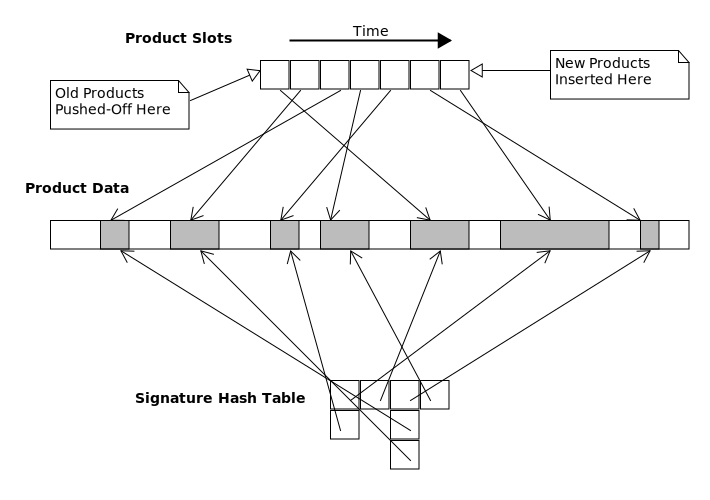

The LDM Product-Queue

The product-queue is a memory-mapped file that temporarily stores
data-products. Access to the product-queue is via the pq module, which
coordinates access by the reading and writing processes to ensure that the product-queue isn't corrupted.
The product-queue has the following characteristics:
- The number of data-products that the queue can contain is fixed when
the queue is created. This is the number of data-product
slots.
- The amount of data that the queue can contain is fixed when the queue is created. This is the size of the
queue.
- A data-product is inserted into the product-queue in contiguous space
and indexed by the time of insertion according to the system clock.
- A data-product will not be inserted into the product-queue if
its signature (i.e., MD5 checksum) equals that of a product already in the
queue.
- Reading a data-product from the queue creates a read-lock on that
product. Read-locks can be shared by reading processes.
- Data-products read from the product-queue sequentially are returned
in time-sorted order (oldest first) according to the insertion-time. Therefore,
data-products can be skipped if the system clock is set backwards.
- Writing a data-product into the queue creates a write-lock on that
product. Write-locks can't be shared.
- If a new data-product can't be added, either because no space is
available for the data-product or because no slot is available, then
unlocked data-products are deleted from the queue -- beginning with the
oldest data-product and continuing to the youngest -- until addition is
possible.
- A writer-counter field in the product-queue keeps track of the number of times the
product-queue has been opened for writing. Opening the product-queue for writing increments the counter;
closing the product-queue decrements the counter. If no process has the product-queue open for writing, then
the writer-counter should be 0. This counter is used to ensure that the product-queue has been properly
closed by all processes that could modify it.
The canonical pathname of the LDM product-queue, relative to the LDM home-directory, is var/data/ldm.pq